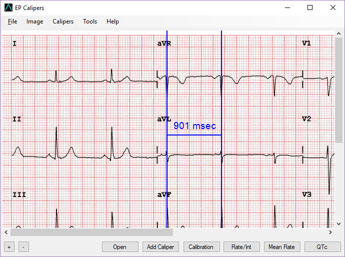
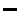

Introduction – EP Calipers 101
Introduction – EP Calipers 101
You're on call, again…
It's 2 AM and the phone rings. It's a nurse on the cardiac unit. Mr. Smith is due to get his antiarrhythmic drug (who comes up with these crazy drug schedules?) and the ECG shows a borderline prolonged QTc interval, at least according to the computer. She's not sure if it is safe to give the drug. She wants to send you the ECG.
You drag yourself out of bed and open up your laptop. There's the ECG in question. You look at the QT interval. Eyeballing it, the QT looks OK. Mentally you start counting little boxes. You pull out the (t)rusty old pair of mechanical calipers some drug rep gave you many years ago, when such largesse was still legal. You think to yourself: I live in a digital age. Am I really making measurements on a computer screen with a pair of mechanical calipers?
Electronic calipers
EP Calipers provides electronic calipers for measuring intervals on images of electrocardiograms (ECGs) or electrophysiologic recordings. In the electrophysiology lab electronic calipers are included as part of the recording system. EP Calipers is intended to provide similar electronic calipers for use on your Microsoft Windows™ PC or tablet. The electronic calipers of EP Calipers are more accurate, easier to use, and less dangerous than mechanical calipers (they don't have sharp points!).
Quick start
After EP Calipers starts, the first step is to load an ECG image. You can use the Open button at the bottom of the screen, or the File | Open menu item. Once an image is loaded click the Add Caliper button to add a caliper to the screen. Move the caliper around by clicking on the caliper's crossbar and dragging it with the mouse. Expand and contract the caliper by dragging the bars on either end of the caliper. Use the zoom buttons to enlarge or shrink the image as needed. If the ECG is bigger than your screen, you can use the scrollbars to move the image around. As an alternative to loading an image you can make the main window transparent or semi-transparent and use your electronic calipers to measure any image that is open on your Desktop. The rest of these help pages will go over how to load ECG images, add and delete calipers, calibrate the calipers and make advanced measurements like the corrected QT interval.
Buttons
The program is controlled either by the buttons at the bottom of the window, or by the menu at the top of the screen. The figure below shows the main window of EP Calipers, including menus and buttons. An ECG image has been loaded and a single pair of calibrated time calipers has been added.

Figure 1: Main window
Note that not all buttons will be available all the time, depending on whether calibration has been performed. Disabled buttons are "grayed" out.
Zoom buttons
 Zoom in
Zoom in-  Zoom out
Open button
- Opens new image file from disk
Add Caliper button
- Add a new time or amplitude caliper
Calibrate button
- Calibrate or recalibrate selected caliper
Measurement buttons
- Rate/Int Toggle heart rate and time interval
- Mean Rate Calculate mean rate and interval from several intervals
- QTc Measure corrected QT (QTc)
Menus
Not all actions are controlled by the buttons, just the common ones. Use the menu at the top of the window as a substitute for the buttons, or in order to perform less common actions. Nearly all the functions of the app are contained in the main menu commands at the top of the screen. Note that there are keyboard shortcuts shown in the menu for many of the app's functions. This is also a context menu that opens when you right click with your mouse on a caliper. This menu allows individual coloring of calipers, movement of caliper components with the keyboard arrow keys, and conversion of time calipers to marching calipers in order to march out rhythms.
Keyboard shortcuts
Many of these keys are combinations using the CTRL (Control) key, the SHIFT key and the ALT key.
| Key | Function |
|---|---|
| CTRL+O | Open image file |
| CTRL+S | Save image file |
| CTRL+P | Print image file |
| CTRL+ALT+R | Rotate image 0.1° right |
| CTRL+ALT+L | Rotate image 0.1° left |
| CTRL+R | Rotate image 1° right |
| CTRL+L | Rotate image 1° left |
| CTRL+SHIFT+R | Rotate image 90° right |
| CTRL+SHIFT+L | Rotate image 90° left |
| CTRL+0 (zero) | Reset image rotation |
| CTRL+= | Zoom in |
| CTRL+- | Zoom out |
| CTRL+T | Add time caliper |
| CTRL+A | Add amplitude caliper |
| CTRL+G | Add angle caliper |
| Del | Delete selected caliper |
| SHIFT-Del | Delete all calipers |
| CTRL+H | Show caliper handles |
| CTRL+I | Toggle rate/interval |
| CTRL+Left arrow | Prev page of multipage PDF |
| CTRL+Right arrow | Next page of multipage PDF |
| F1 | Help |
| Left arrow | Tweak caliper component left |
| Right arrow | Tweak caliper component right |
| Up arrow | Tweak caliper component up |
| Down arrow | Tweak caliper component down |
| Escape | Cancel action |